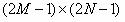
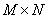

内容 |
2次の相関
2次の相関
これはOriginProのみの機能です。
1. corr2 im1:=Mat(1) im2:=Mat(2);
2. corr2 im1:=Mat(1) im2:=Mat(2) norm:=1;
3. corr2 im1:=Mat(1) im2:=Mat(2) algorithm:=circular;
4. corr2 im1:=Mat(1) im2:=Mat(2) method:=shift;
| 表示 名 |
変数 名 |
I/O と データ型 |
デフォルト 値 |
説明 |
|---|---|---|---|---|
| 入力行列1 | im1 |
入力 MatrixObject |
<unassigned> |
最初の2次元の入力信号を持つ行列を指定します。 |
| 入力行列2 | im2 |
入力 MatrixObject |
<unassigned> |
2番目の2次元の入力信号を持つ行列を指定します。 |
| 手法 | method |
入力 int |
fft |
2D相関を計算する方法を指定します。 オプションリスト
|
| アルゴリズム | algorithm |
入力 int |
linear |
線形相関または循環相関を計算するかどうかを指定します。 オプションリスト
|
| 規格化の結果 | norm |
入力 int |
0 |
結果を規格化するかどうかを指定します。 |
| 相関の結果 | om |
出力 MatrixObject |
<新規>!<新規> |
出力行列を指定します。 |
2D相関は、 行列に保存されている2つの2D信号間の類似性を検出するのに使われる方法です。2つの行列、aおよびbの2D相関は次式で定義されます。
2D相関は線形または循環にすることができます。線形の相関では、元の範囲の外側にあるインデックス付きの要素は0として扱われます。それに対して循環の相関では、元の範囲内の要素の繰り返しで観測されます。線形相関の結果の行列の大きさは、

となります。ここで M および N は、それぞれ2つの行列の幅と高さになります。逆に、循環相関を計算する場合、行列の大きさは、

となります。通常、入力信号にインパルスが含まれる場合、線形相関が使われ、信号が周期的に表示される場合、循環相関が使われます。
計算した相関のマグニチュードは、信号がどの程度似ているかを示します。相関が大きい場合、2つの信号は大変よく似ていると考えられます。相関が0の場合、2つの信号は独立していると考えられます。
1. MBookSignalsという名前の行列の1番目のシートと2番目のシートにある信号の線形相関を計算するには、次のスクリプトコマンドを使います。
corr2 im1:=[MBookSignals]1!1 im2:= [MBookSignals]2!1
2. 2D相関の方法を変更するには、次のように入力し、corr2ダイアログを開き、オプションを選択します。
corr2 -d
3. 事前に保存したテーマファイルを使ってデータに2D相関を実行するには、corr2ダイアログで設定を保存し、保存したテーマのタイトルを使って、次のスクリプトコマンドを実行します。
corr2 -t "my two-d corelation theme.oth"
2D相関の計算には2つの方法 FFT および Shift-Accumulationがあります。Shift accumulationが選択されると、結果は相関の定義式を使って計算されます。FFTが選択されると、2D相関の計算は実際には次の手順で実行されます。
1. 両方の2D信号の離散フーリエ変換が2D FFTを使って計算されます。
2. 最初の信号のフーリエ係数と2番目の信号の共役係数の乗算が行われます。
3. 積に逆離散フーリエ変換を実行します。
一般的には、FFTの方法は大きなデータに対して高速に計算しますが、FFTの性質から境界に近いいくつかのデータポイントに対して正確さが失われます。
William H.Press, Brian P.Flannery, Saul A.Teukolsky, William T.Vetterling.1992.Numerical Recipes in C : The Art of Scientific Computing.Cambridge University Press.